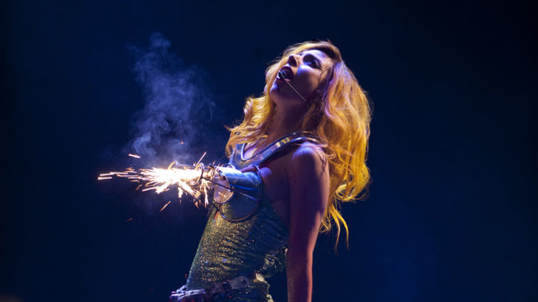

"The Mother Título atribuído à ela após sua turnê do álbum The Fame Monster |
The Monster Ball Tour, 2010 |
Começo da carreira (continuação) |
Fama |
|
Stefani percebeu que seu nome não a ajudaria a entrar na indústria. Um dia, estava cantando Again Again no piano para Rob Fusari e ele disse a ela: "Você é tipo o Freddie Mercury, você é tão dramática." Ele explicou a ela que a 'garota lá dentro', o aspecto teatral dela, era a parte mais interessante. A Rádio Ga Ga é uma músicas do Queen favoritas de Fusari. “Todos os dias, quando Stef chegava ao estúdio, em vez de dizer olá, eu começava a cantar ‘Radio Ga Ga’”, explica Fusari. “Essa foi a música de entrada dela.” Stefani estava pensando em um apelido de palco, quando recebeu uma mensagem de Fusari que dizia “Lady Gaga”. “Na verdade, foi uma falha”, diz Fusari. “Eu digitei ‘Radio Ga Ga’ em uma mensagem e ele fez uma correção automática, então de alguma forma ‘Radio’ foi alterado para ‘Lady’. Ela me respondeu: ‘É isso’. Depois daquele dia, ela era Lady Gaga. Ela é tipo. ‘Nunca mais me chame de Stefani.’” Ela achou seu novo apelido legal e até seus amigos começaram a chamá-la de Gaga. Ela manteve 'Lady', para feminilizar seu apelido. |
O novo som aumentou sua popularidade com músicas antigas como 'Beautiful, Dirty, Rich' e 'Shake Your Kitty'. Gaga começou a fazer sua performance ao vivo com seu teclado e seu MacBook tocando suas batidas sintéticas. Fusari a tocou para Joshua Sarubin, que era vice-presidente de A&R da gravadora Island Def Jam, que disse "Tenho que trazer essa garota aqui. Há algo incomum nela”, diz Sarubin. “Ela sentou-se ao piano em uma sala de exibição e a maneira como ela tocava, as letras e a maneira como ela agia e cantava era tão diferente e na sua cara, que você não conseguia se virar. Em 6 de setembro de 2006, Lady Gaga disse 'Sim' para um contrato de desenvolvimento artístico e um primeiro álbum agendado para maio de 2007. Porém, ela foi dispensada da Island Def Jam depois de apenas alguns meses. |
Copyright 2023. Todos os direitos reservados.